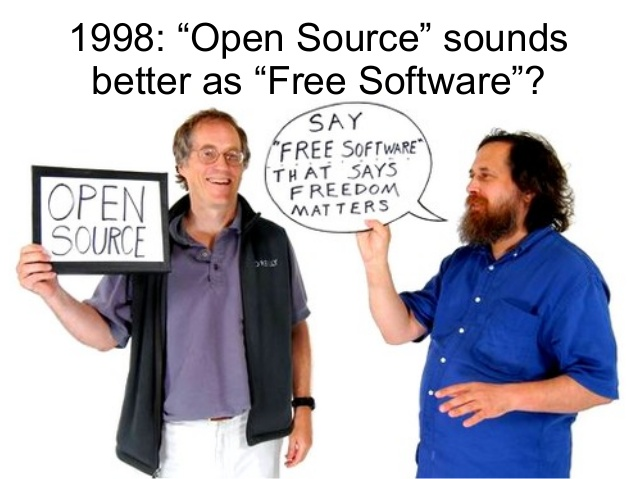
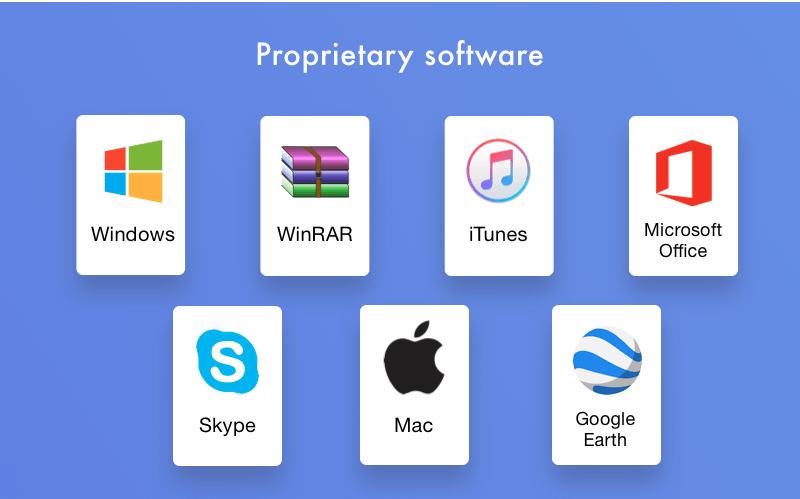

Free vs Proprietary software.
What is free and proprietary software?
Lets make this clear before we start, the word 'free'in free software emphasizes freedom not price. To avoid this confusion in the English langauge free software is often called libre software. Free software is the type of software that grants the user the freedom to share, study and modify it. Whereas, proprietary software doesn't respect these freedoms instead they have the sole control over how their software is distributed, used and they are the only people with access to the source code in order to make changes to the software.
The freedoms/principles of free software.
. The freedom to deploy the software for any use case without any restrictions. For example, saying that the license of a program expires after 30 days makes it non-free.
. The freedom to study how the software works and modify it according to your needs and preferences.
. The freedom to freely re-distribute the software to assist someone in need. The redistribution can be done at a cost or at no cost.
. The freedom to enhance the performance of the software and release your enhancements for the community to benefit—both programmers and non-programmers. You can do this at a cost or at no cost.
What are adantages and disadvantages of Free software?
Advantages: Community development can acomplish much more than a small startup can. Stability and security is much improved by the large amount of community eyes because they're are more people looking at the source code spotting bugs and security issues, which allows for them to be spotted much quicker and be patched much quicker without having to wait for the devlopment team to bring out a new version in order to patch it. It is easier and cheaper to switch from one free software to another compared to switching proprietary software. Free software does not tie you down to any organisation.
Disadvantages: In free software everyone can freely edit or upgrade the software according to their level of understanding. But since the work is volunteered they don’t provide the documentation of the code so the members may have difficulty in understanding the code. Not as ‘user-friendly’ – as there is no requirement to create a commercial product that will sell and generate money, free software can tend to evolve more in line with developers’ wishes than the needs of the end-user. Although having an free & open system means that there are many people identifying bugs and fixing them, it also means that malicious users can potentially view it and exploit any vulnerabilities.
What are the advantages and disadvantages of proprietary software?
Advantages: Developed professionally and carefully tested, help can be sought from the organisation who supplied the software if problems occur and feature updates which extend the software's facilities are often available, although usually at a cost. Disadvantages: There is an initial or ongoing cost, the extent of its use can be limited, unless the licence allows it the user may not redistribute the software and Software cannot be adapted to meet the needs of the user because of it being closed source.
|  |  |